Le problème inventé, l'audience et le territoire.
En Belgique, les maisons rares se vendent souvent sans annonce, entre 1,5 et 4 millions d'euros. Les acheteurs sont pressés, discrets, et fatigués des portes ouvertes.
Le brief fictif : créer Maison, un chasseur de biens qui travaille pour l'acheteur, pas pour le vendeur. Quelques clients par an, trois à cinq biens présentés par recherche, un seul interlocuteur du premier entretien aux clés. Le territoire : toute la Belgique. Les quatre biens de la sélection sont au nord d'Anvers par hasard, pas par choix.
Sur ce marché, des acteurs locaux comme Rodenburgh Immobiliën ou Engel & Völkers occupent déjà le segment villa avec les codes du secteur : bleu marine, serif à fort contraste, listings nombreux. L'espace à prendre est celui de la rareté et du calme.
Le chasseur discret, en Belgique.
biens en ligne, pas quarante. La rareté se montre.
polices. Une condensée en grand, un sans-serif en petit.
partout : échelle de texte, espacements, partages 38,2 / 61,8.
Un moodboard de matières, édité à neuf références. Ce n'est pas la palette : c'est l'inspiration.
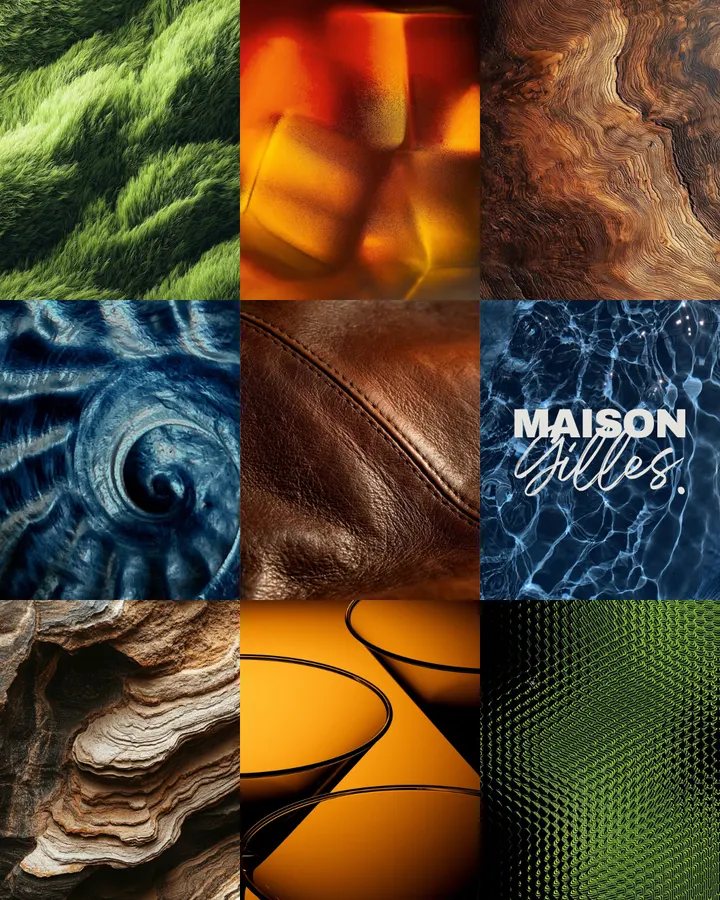
Neuf tuiles, toutes des matières prises de près : herbe, ambre dans un verre, bois fendu, fossile, cuir, eau, roche stratifiée, verre teinté, maille. Aucune maison, aucun intérieur. Le moodboard cherche une sensation, celle du toucher et du temps long, pas un style de décoration.
Il est volontairement éclectique : vert, ambre, bleu, brun. Cette étape sert à élargir avant de resserrer. La palette finale n'en sort pas par copie mais par distillation.
Comment chaque teinte de la palette dérive d'une image du moodboard.
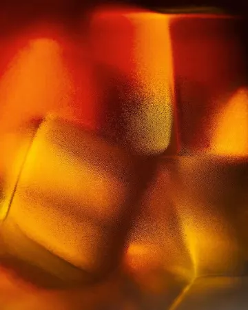
Ambre → Bordeaux #390517La version profonde et sourde des rouges du moodboard. Assez sombre pour être une atmosphère, assez rouge pour ne pas être un noir.
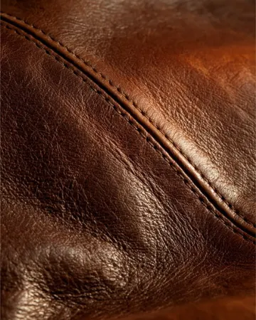
Cuir → Bronze #A38560La synthèse du cuir et du bois. Il souligne, il ne recouvre jamais. Sa version encre (#6F5536) sert au texte sur fond clair.
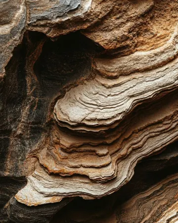
Pierre → Ivoire #E8E1D5La strate claire de la roche : un neutre chaud, jamais blanc, qui porte 62 % de chaque page.
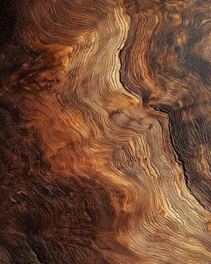
Bois → Noir chaud #1A1412Le brun le plus sombre du bois plutôt qu'un noir pur. Texte courant et menu plein écran.
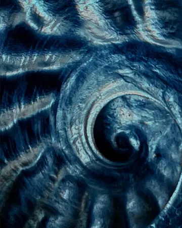
Fossile → matière de l'accueilRetiré de la palette, gardé comme élément graphique : teinté bordeaux, il apparaît une fois par page.
Le vert profond (#16302B) et le rouille (#A44529) de la première planche de couleurs. Six teintes fortes, c'est une marque qui hésite. Le vert vit dans les photos de parcs, le rouille s'est fondu dans le bordeaux.
Le bronze sur ivoire mesure 2,66:1, sous le seuil AA même pour un titre. Il a été gardé pour les filets et le texte sur bordeaux, et doublé d'un bronze encre à 5,34:1 pour les labels et les chiffres sur fond clair.
Logo, palette nommée, échelle typographique. Le détail est dans le brand book.
Le logo est une signature : « Maison », tracé à la main par le fondateur d'un seul geste, sans retouche. La marque s'appelle Maison, sans autre mot ; le nom du fondateur reste dans les coordonnées. La signature entière est utilisée partout ; le M seul ne sert qu'au favicon et à l'avatar. Une flèche a été essayée dans le M, puis retirée : le geste se suffit.
Un premier montage associait un monogramme EG en perspective à « MAISON GILLES » en Morganite condensée. Il a été rejeté : les initiales n'étaient pas celles du nom, la perspective du signe se battait avec des lettres plates, et la condensée en logo tirait vers le magazine. La signature à la main a remplacé l'ensemble.
| Nom | HEX | Rôle | Contraste sur ivoire |
|---|---|---|---|
| Ivoire | #E8E1D5 | Fond | — |
| Papier | #F3EEE6 | Surfaces posées | — |
| Noir chaud | #1A1412 | Texte, menu | 14,0 |
| Bordeaux | #390517 | Titres, boutons, une surface par page | 13,4 |
| Bronze | #A38560 | Filets, texte sur bordeaux | 2,7 |
| Bronze encre | #6F5536 | Labels et chiffres sur fond clair | 5,3 |
Morganite
Plus Jakarta Sans
La condensée ne porte que les titres et les chiffres, en grand, avec de l'air. En paragraphe elle ferait magazine ; ici elle fait maison. Échelle φ depuis 16 px : 12,6 · 16 · 26 · 42 · 68 · 110 · 178.
Partage 38,2 / 61,8 sur tous les blocs à deux colonnes. Sélection en colonnes 38,2 / 23,6 / 38,2. Espacements Fibonacci de 8 à 233 px, définis une fois en variables CSS ; aucune valeur inventée dans les composants.
Accueil, sélection, fiche de bien, mobile. Lenteur maîtrisée, aucune pression.
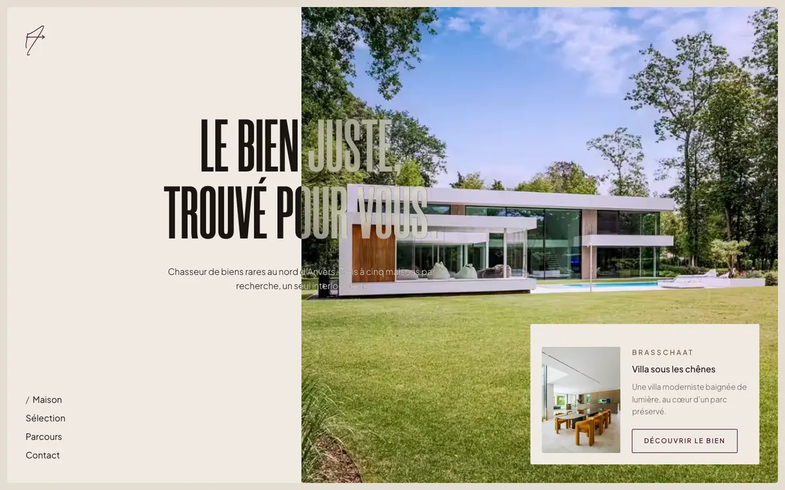
Le titre traverse la couture entre le panneau ivoire et la photo et s'inverse en passant : noir chaud sur ivoire, verre dépoli sur l'image. La navigation est une liste verticale en bas à gauche. Une seule carte de bien, un seul bouton.
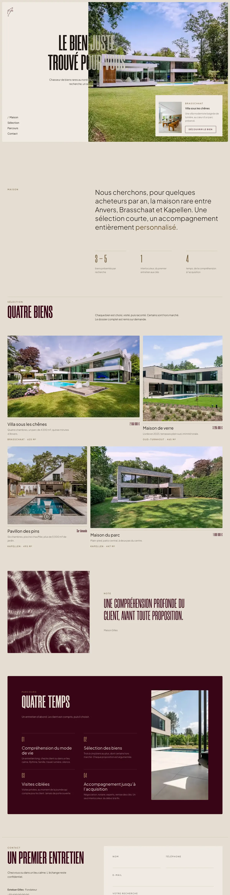
prefers-reduced-motion coupe tout.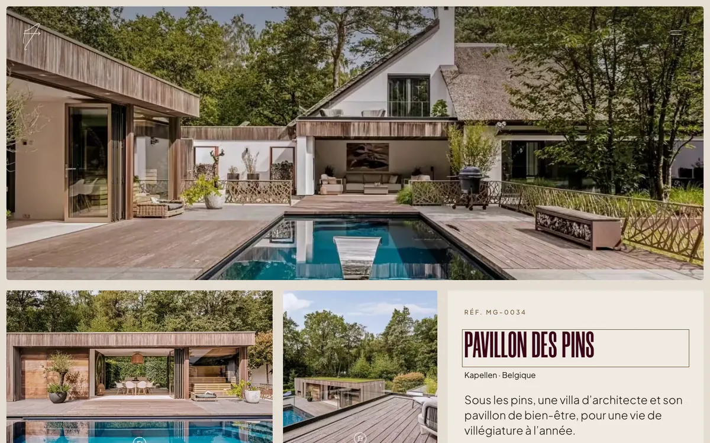
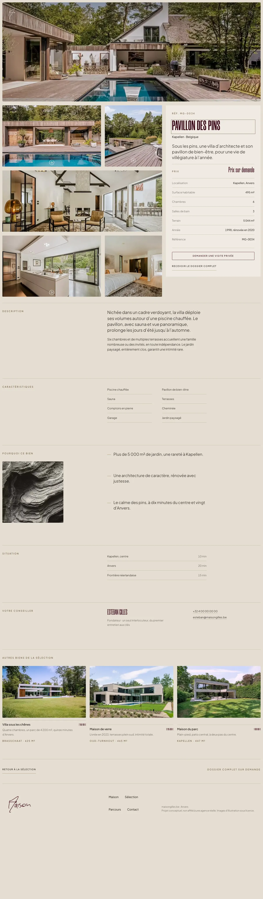
Hero à 61,8 vh, galerie 61,8 / fiche collante 38,2. Les faits (surface, terrain, chambres, année) sont alignés en chiffres tabulaires. Un seul point de contact, répété discrètement : « Demander une visite privée ». Le formulaire se pré-remplit avec la référence du bien.
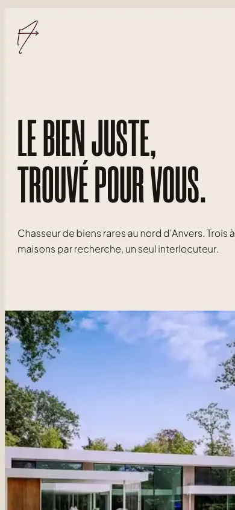
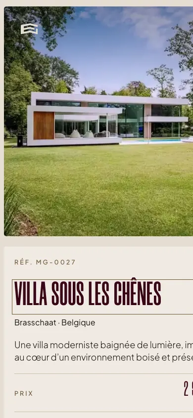
Une colonne, images pleine largeur, titre réduit à quatre mots. Les grandes lettres condensées survivent au petit écran parce qu'il y en a peu.
| Point | Avant | Après |
|---|---|---|
| Image hero (1600 px) | 681 KB WebP | 212 KB AVIF · 110 KB à 1080 px |
| Images de contenu (1080 px) | 165 à 640 KB | 32 à 118 KB AVIF |
| Polices Morganite | 292 KB TTF | 30 KB WOFF2 sous-ensemble |
| Formats | WebP seul | AVIF, WebP en repli, srcset 640 / 1080 / 1600 |
| Hero | fetchpriority | preload + fetchpriority, jamais lazy |
| Contraste labels | 2,66:1 bronze | 5,34:1 bronze encre |
| Taille des labels | 9,9 px | 12,6 px |
| Cibles tactiles | 44 px | 44 px |
Mesures faites sur les fichiers du projet. Les temps de chargement réels (LCP, INP) dépendent de l'hébergement et n'ont pas été mesurés en production.
Ce que le client tient en main. Les autres applications sont dans le brand book.
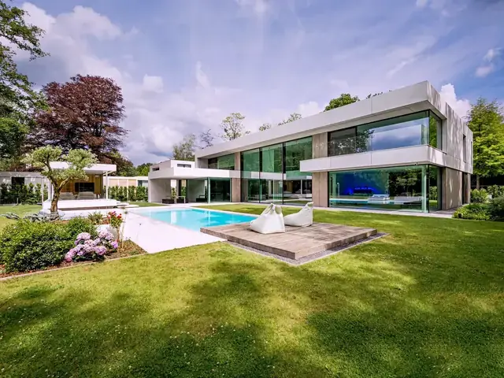
21 × 21 cm, remis après la visite. La pièce qui reste sur la table du salon.
Ni prix ni photo. Le panneau signale une maison qui n'est pas sur le marché.
Comment les décisions ont été prises, et ce que le projet ne prétend pas.
Le socle invisible d'abord : une phrase de positionnement, une palette dérivée et nommée, une échelle typographique en variables CSS, une grille. Sans cela, aucun effet ne fait « grande maison ». Puis la retenue : chaque élément ajouté a dû justifier sa place, et la plupart ont été retirés. Le calcul de contraste a été fait avant le choix des usages de couleur, pas après.
Le site a été construit en HTML, CSS et JavaScript sans dépendance, pour que la performance soit une propriété du système et non une optimisation tardive. Les images sont exportées par un script qui applique le même grade à toutes, puis les encode en AVIF et WebP à trois largeurs.